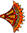
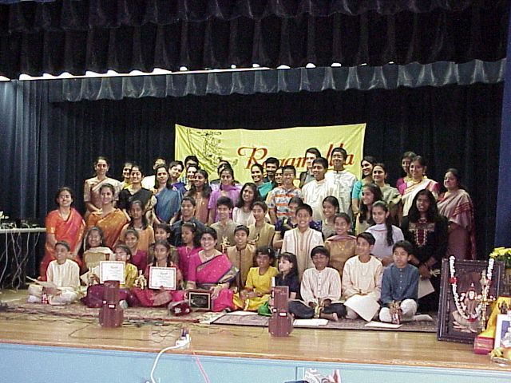
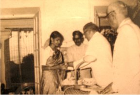
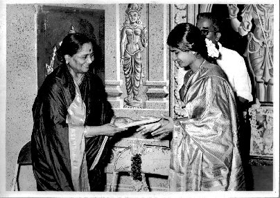
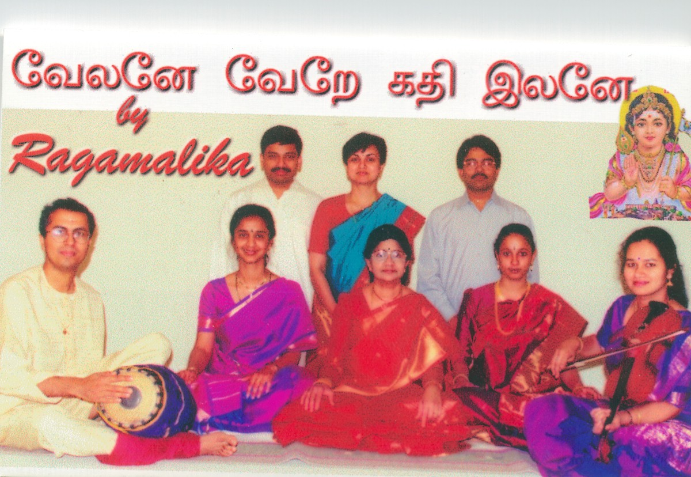

Introduction
Achievements
International
Flavor
Violinist
Conclusion
Back to Main Page
Maragatham Ramaswamy is a seasoned and well known musician who has been performing and training disciples in the DC metro area in the tradition of Carnatic Music - the classical music of South India.
Maragatham Ramaswamy was formally
educated and trained in Carnatic music as a vocalist and a violinist.
Earning the title of Sangeetha Vidhwan at an early age in these two pursuits,
she has performed at
prestigeous sabhas in Madras and at All India Radio, Madras before she
moved to the United States in the
1980s with her family.
Her reputation in Madras preceded
her arrival in Northern Virigina. She was approached by many interested
students and parents for assistance in learning Carnatic music. She responded
because of her love for
teaching. She saw this as an opportunity to inculcate a love for Carnatic
music in young minds and hearts.
Very soon her love of teaching overtook her own aspirations as an individual
performer.
| In 1987, she set up an institution called
"Ragamalika" that reflects her unique vision: to
provide musical training that combines hands on practice with theory
- and above all, training vocalists to "play" their voice
like a delicate instrument. The website for this organization (located
at http://www.ragamalika.net/) was lovingly put together by her devoted students. This website was first launched during the 15th anniversary of Ragamalika as a tribute to a great guru and an active and lively musical organization that she leads. |
|
 |
Maragatham lives for the day when
one of her students, is on stage, surpassing everything that she herself
achieved. For her that day vindicates all the efforts she has put in,
in her teaching.
|
Maragatham started training as a violinist at a very young age and then later added vocal music to her repertoire.She has trained under the renowned vocalist, S. Kalayanaraman, who himself was the disciple of the late maestro G.N. Balasubramaniam.Maragatham Ramaswamy has had formal training in the theory and history of music. Maragatham Ramaswamy has also recieved vocal training from prominent musicians such as Palghat K.V.Narayanaswamy, T.M.Thiagarajan, and Ramnad Krishnan.
|
 |
{kind=link}
She graduated from the prestigious Music College of Madras with a Gold Medal for outstanding achievement. Maragatham Ramaswamy has recieved many awards from prestigious organizations such as the Music Academy and the Krishna Gana Sabha for her vocal and violin performances.
|
 |
The title Sangeeta Vidhwan was conferred on Maragatham
for violin and vocal music in April 1963 by the Government of Madras
(Tamil Nadu). She was honored by "Tamil Thenral Radio"
for her outstanding contribution and achievement to |
|  |
She has released a double cassette album containing rare compositions on the Hindu deities 'Vinayaka' and 'Devi'. Maragatham Ramaswamy and her senior students released an album on Lord Muruga, the proceeds of which were donated to the Murugan Temple in Maryland. She has also been honored by "Tamil Thenral Radio" for her outstanding contribution and achievement to Carnatic Music in the Washington D.C. area.
|
{kind=link}
Maragatham has been very active in the DC Area serving as an artiste, mentor, a teacher as well as a music consultant for public stage performances.
She participated in the U.S. Army
Bevoir Research, Development and Engineering
Center's closing observance of "Asian Pacific American heritage Month"
on 29th
May 1991. In 1994, she was the music consultant for Terrence Mcnally's
"A Perfect Ganesh" performed at the Arena Stage in Washington
D.C. Perfect Ganesha. She is listed as a music consultant along with John
Wubbenhorst,, P.K. Swaminathan and P.K. Subramanian.
A performance of classical music
in the Arthur M. Sackler Gallery, Washington, D.C. followed in 1996. In
July 1997, Maragatham participated along with her students in the Festival
of American Folklife: "Sacred Sounds", in Washington DC. She
also participated in the 20th and 21st Takoma Park festival in Sept 1997
and 1998 respectively.
Violinist
:
Maragatham Ramaswamy is an accomplished violinist as well. She recieved
her initial training under Trivandrum V. Harihar Iyer and then honed her
skills under the guidance of famous musicians like T.N.Krishnan, M.S.
Anantharaman and Lalgudi Jayaraman. Prominent music critics in major Indian
newspapers have recognized Maragatham for her "precise grasp of laya
( rhythm) and exquisite sense of raaga". ( Indian Express)
Maragatham Ramaswamy saw a deepening need for imparting training in Carnatic Music ( violin and vocal) to interested and motivated students in the local community. To fulfill this need, in 1987, she set up an institute called "Ragamalika" that reflects her unique vision: to provide musical training that combines hands on practice with theory - and above all, training vocalists to "play" their voice like a delicate instrument.